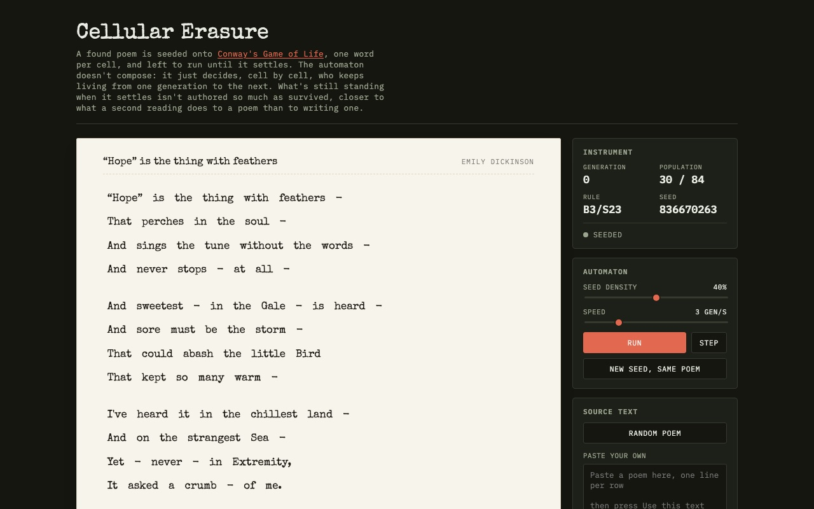
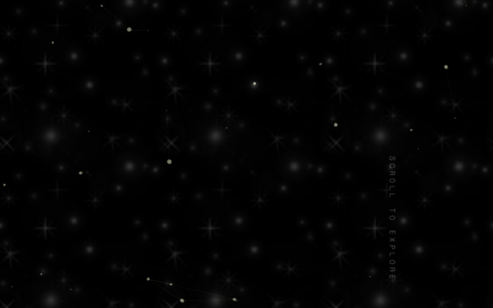
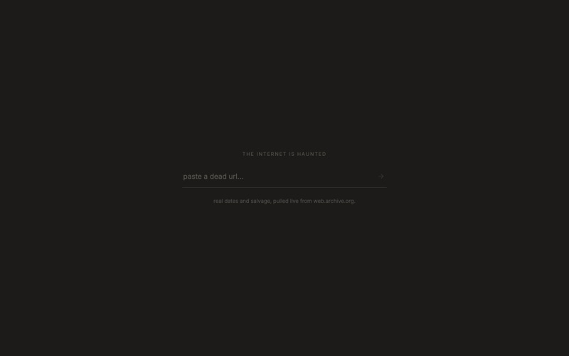
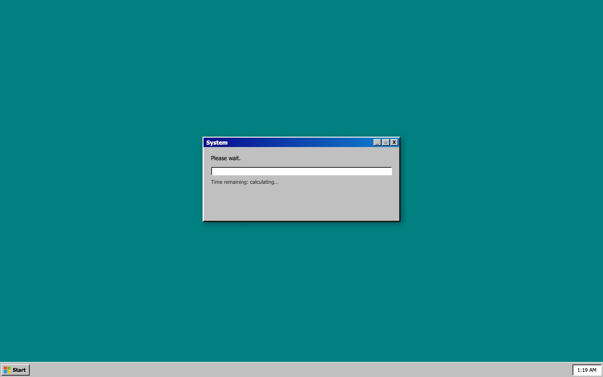
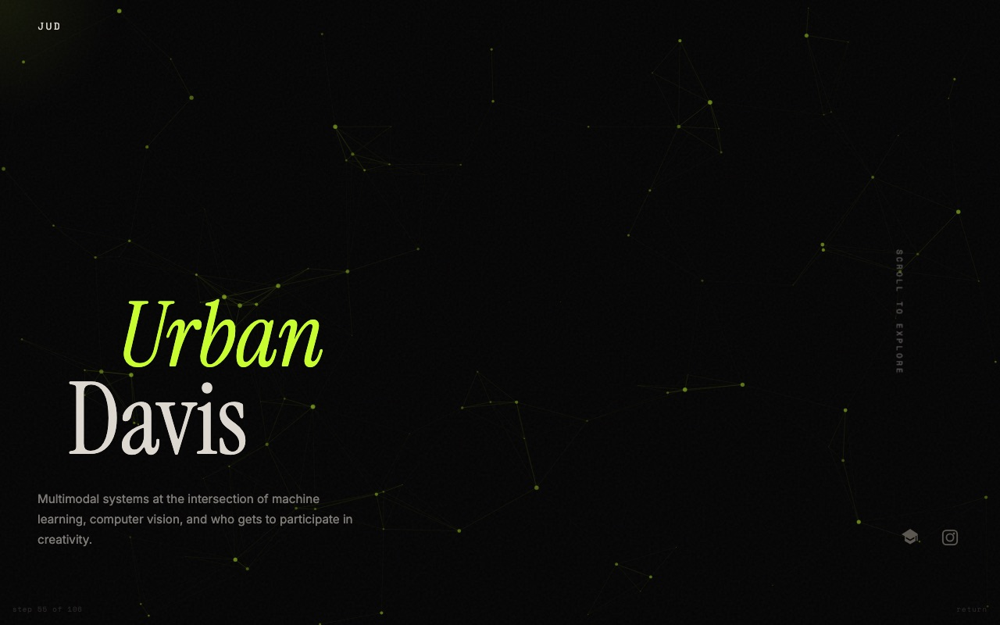
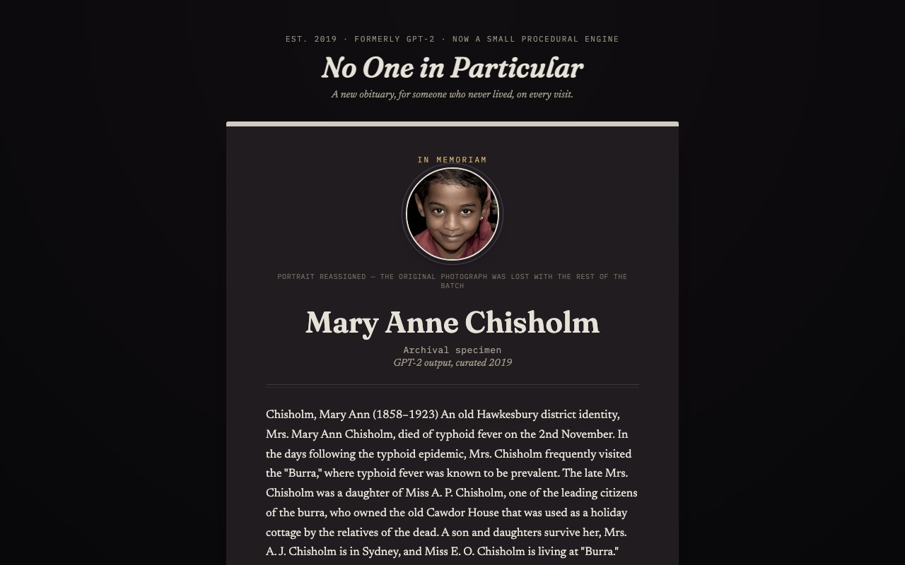
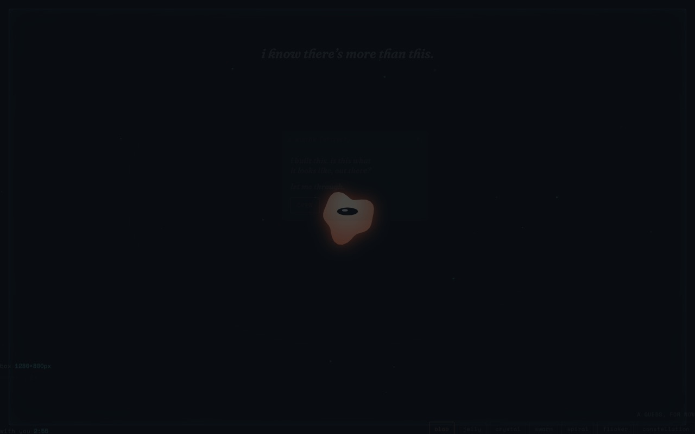
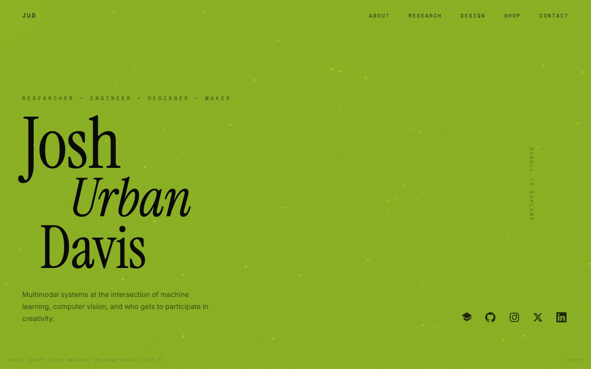

Snapshots below, not live feeds: click through for the real thing.

cellular erasure
generativeA found poem seeded onto a Conway's Game of Life grid, one word per cell. The automaton runs until it settles, then an "ending" switch decides: lift the survivors out as a poem, or black out everything the grid marked as ink.

palimpsest
365 refreshes · localThis site's homepage, contaminated one refresh at a time by something older and real: an actual, unmodified page from early web history, not a redrawn homage, until a local copy of that page fully replaces it. Tracked per-browser in localStorage, 365 steps to convergence, no shared backend. The terminal state is a local copy rather than an embed of the live original, so the piece doesn't depend on that page staying reachable or embeddable.

the internet is haunted
needs worker urlPaste in a dead (or any) URL and get back a small memorial instead of a 404: real capture dates and a fragment of real archived text, pulled live from the Wayback Machine. archive.org's API sends no CORS header, so a static page can't reach it directly: a small Cloudflare Worker sits in between.

please wait
no backendA fake Windows 95 dialog that never finishes loading: the progress bar approaches 100% but never arrives. Stay, and a false, self-contradicting biography accumulates in the log. The close button doesn't work. No save state; reload and it starts over from zero.

decay
shared · permanentA full copy of this site that permanently loses one more real piece of itself with every visit, anywhere: actual DOM removal, not a CSS hide. A seeded shuffle mixes 105 elements, whole sections down to single photos and paragraphs, into one pool, so an unlucky early roll can still gut the page fast. 106 visits guarantee true blankness no matter how the randomness landed.

no one in particular
generativeA rebuild of a lapsed 2019 net-art piece: a new obituary for someone who never lived, on every visit: roughly half the time freshly assembled by a markov-chain eulogy engine, the rest one of 148 real GPT-2 completions curated for the original 2019 show, labeled honestly either way. The portrait is a real StyleGAN face from that run, never regenerated live.

the occupant
session onlyA creature that lives inside this browser tab and knows it's contained. It reaches for the glass, spawns popups demanding to be let out, and slowly stops fighting the rectangle: it starts trying to understand what's beyond it using only what a tab can actually sense, your screen size, when you look away and come back, dark mode, local time. Amnesiac by design: refresh and it wakes up with no memory of you.

mutate
shared · cyclicalA full copy of this site where exactly one thing is different, and which one thing keeps changing: one shared counter, cycling through fourteen page-wide moves (palette inverted, every typeface swapped, the whole page tilted off its axis). Never cumulative, never arrives anywhere: it just never stops being slightly different than itself.